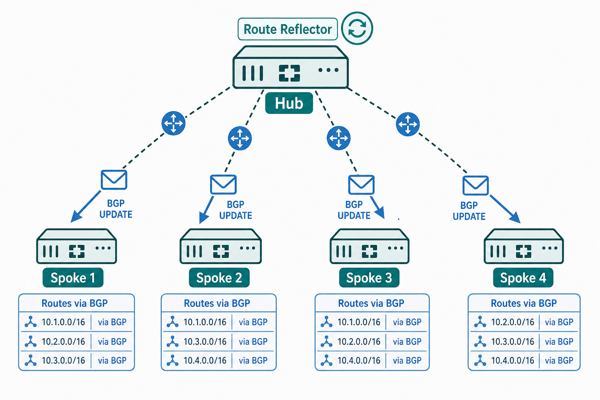

Overview
BGP is the preferred routing protocol for ADVPN deployments because its topology model — explicitly configured peer relationships rather than link-state flooding or distance-vector broadcasts — aligns well with the hub-and-spoke overlay structure. In ADVPN, the hub FortiGate serves as the BGP focal point: every spoke forms a BGP session with the hub, not with each other. The hub receives each spoke's local prefix via BGP and advertises all spoke prefixes back to all other spokes. This is functionally a route reflector model: the hub reflects routes between peers that do not have direct BGP sessions with each other. The spokes do not need to form a full mesh of BGP sessions — the hub handles the redistribution centrally.
The choice between iBGP and eBGP in ADVPN depends on the AS numbering strategy. In iBGP deployments, hub and all spokes share a single AS number. iBGP requires either a full mesh of sessions between all BGP speakers or a route reflector — the hub naturally serves as the route reflector, making iBGP viable without full-mesh complexity. In eBGP deployments, each spoke is assigned a unique AS number and the hub is in a separate AS. eBGP does not have the iBGP loop-prevention restriction that prevents a BGP speaker from advertising iBGP-learned routes to other iBGP peers without a route reflector, so some engineers prefer eBGP for its simpler next-hop handling. Both designs are supported in FortiGate ADVPN; the NSE7 curriculum covers the iBGP route-reflector model as the primary design pattern.
A critical configuration element on the hub is the BGP neighbor definition for each spoke peer. The set next-hop-self enable directive on the hub's BGP neighbor configuration causes the hub to rewrite the BGP next-hop attribute for all routes it advertises to that spoke to be the hub's own ADVPN overlay IP. Without this, the BGP next-hop for a spoke's prefix as advertised from the hub might be the originating spoke's overlay IP — an address that the receiving spoke cannot reach directly without a shortcut. With next-hop-self, every spoke sees the hub as the BGP next-hop for all remote prefixes, ensuring traffic routes correctly via the hub until a shortcut is established. When shortcuts form, the routing layer must then update these next-hops — a topic covered in Session 27.

ADVPN with BGP hub-and-spoke setup diagram
Target Questions
These are the questions your Socratic session will explore. Read them before you start — they tell you what understanding to look for while reviewing the study guide.
- 1Why is BGP preferred over OSPF as the routing protocol for ADVPN deployments?
- 2What BGP role does the hub play in ADVPN — what routes does it advertise, and to whom?
- 3What is the difference between using iBGP vs eBGP when connecting spokes to the hub in ADVPN?
- 4How is the BGP peer configured on a spoke when the hub IP is the ADVPN overlay address?
- 5Why must
set next-hop-self enableoften be configured on the hub BGP peer definition? - 6What is a BGP route reflector — can the ADVPN hub serve as a route reflector for spokes?
- 7How are BGP sessions between hub and spoke affected when an ADVPN shortcut forms between two spokes?